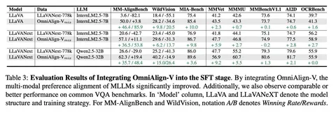
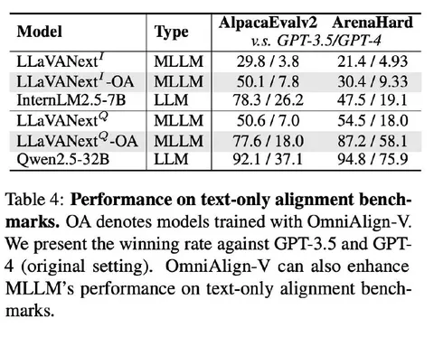
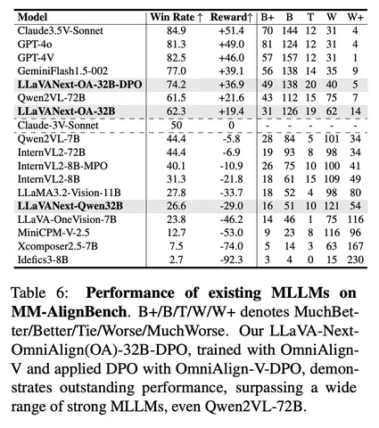

В первой части разбора рассказали о ключевых проблемах алайнмента VLM и гипотезах авторов. Дальше статья сводится к сбору данных. Вопросы и ответы генерируются через проприетарные модели, в основном GPT-4o. Самое интересное — как отбирают изображения и какие срезы задач выделяют.
Авторы хотят собирать open-ended-вопросы, не подразумевающие односложный ответ. Этим пытаются перенести в мультимодальный сеттинг часть навыков, которые обычно хорошо выучиваются из text-only-данных: креативность, генеративные запросы, более развёрнутые ответы.
По типам задач выделяют два основных среза:
1) общий (знания, ризонинг, генеративные сценарии),
2) инфографика.
У каждого среза — свой пайплайн. Сначала идёт фильтрация изображений: убирают самые простые картинки, оценивают визуальную сложность и стараются оставить те, где много объектов. Для этого используют внешние модели.
Дальше генерация стандартная: few-shot + промптинг GPT-4o для вопросов и ответов. Но на некоторых задачах few-shot работает хуже — там добавляют дополнительные приёмы, чтобы сохранить разнообразие.
Отдельно описана стадия рефайнмента. QA-пары усложняют и переписывают с помощью LLM, добавляя более строгие требования к форме ответа: ограничения длины, стиль, структура.
Ещё одна стадия — фильтрация QA-пар. На некоторых срезах, например в графиках, авторы считают, что даже GPT-4o недостаточно надёжна. Тогда используют ансамбль нескольких проприетарных и опенсорсных моделей, сравнивают ответы и либо мёржат, либо фильтруют, чтобы получить более качественную финальную пару.
В итоге удалось собрать около 200 тысяч QA-пар.
Бенчмарк MM-AlignBench
Существующие бенчмарки обычно проверяют только правильность ответа, когда есть ground truth, но не его качество в смысле human preference. Поэтому собирается отдельный небольшой бенчмарк — MM-AlignBench.
В качестве референса вспоминают попытки сделать VLM-арену, например, WildVision. И используют похожую идею оценки: сравнивают ответы моделей попарно и просят GPT-4o выступить судьёй. Получают вердикт по шкале из нескольких категорий (A лучше B, немного лучше или равны и в обратную сторону). Из этого считают win rate и reward.
Эксперименты и результаты
Дальше авторы проводят эксперимент на базе LLaVA-Next: заменяют часть исходных данных на свои новые данные OmniAlign-V и смотрят, что будет с метриками. На прокси-бенчмарках под human preference (WildVision и MM-AlignBench) метрики заметно растут. При этом классические мультимодальные бенчмарки не проседают критично. То есть human preference получилось улучшить, не убив привычные VLM-метрики.
На текстовых бенчмарках деградация всё ещё остаётся, но становится меньше. Если раньше просадка была около 50 пунктов, теперь стало около 30. Это всё ещё много, но разрушение LLM-навыков VLM стало слабее.
В итоге получился неплохой бенчмарк, который отражает другие аспекты качества по сравнению с тем, что обычно замеряют в мире VLM. Причём его не просто собрали, но и вывели на лидерборд — вопрос теперь в том, будут ли остальные игроки им пользоваться. Но сам интент двигать оценку в сторону human preference выглядит интересным и полезным.
Разбор подготовил
CV Time


